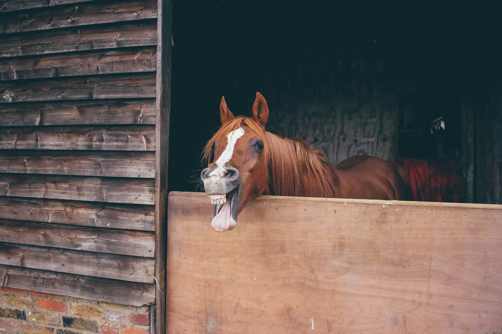

Cattle (Bos taurus) are large, domesticated, bovid ungulates widely kept as livestock. They are prominent modern members of the subfamily Bovinae.

Cattle (Bos taurus) are large, domesticated, bovid ungulates widely kept as livestock. They are prominent modern members of the subfamily Bovinae.
The horse (Equus ferus caballus)[2][5] is a domesticated, one-toed, hoofed mammal. It belongs to the taxonomic family Equidae and is one of two extant subspecies of Equus ferus. The horse has evolved over the past 45 to 55 million years from a small multi-toed creature, Eohippus, into the large, single-toed animal of today. Humans began domesticating horses around 4000 BCE in Central Asia, and their domestication is believed to have been widespread by 3000 BCE.
